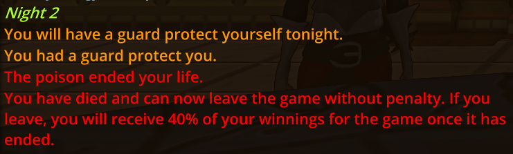

There is zero way to counter this and you don’t even know it happens? I guarded myself Night 1 and Night 2 even.
Every other similar ability isn’t usable until 3 (Prince Execute, Knight Cold Steel, Hunter Wolf, Sorc Circle)
Feels like it needs some tuning/tweaking.
I wasn’t able to even do anything before I was dead.
Evil King is so rare and fun to play, this doesn’t feel fun or fair at all.